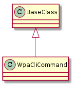

A module to query the device for interface information.

| WpaCliCommand(connection[, interface]) | The WpaCliCommand interprets ifconfig | ||
| WpaCliCommand.status | This is dynamically generated. | ||
| WpaCliCommand.ip_address | This is dynamically generated. | ||
| WpaCliCommand.ssid | This is dynamically generated. | ||
| WpaCliCommand.supplicant_state | This is dynamically generated. | ||
| WpaCliCommand.interface | This is found once and stored. | ||
| WpaCliCommand.mac_address | This is found once and stored. | ||
| WpaCliCommand._match(expression, name, arguments) |
|
||
| WpaCliCommand.__str__() |